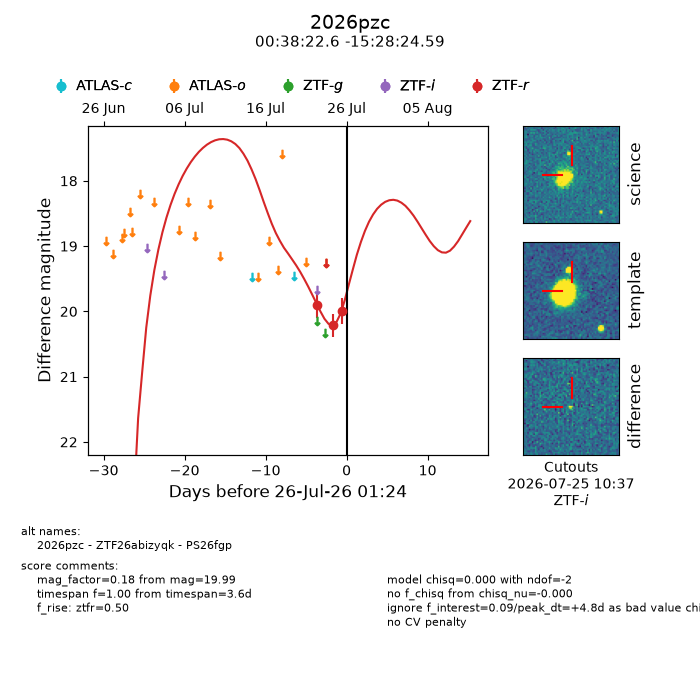
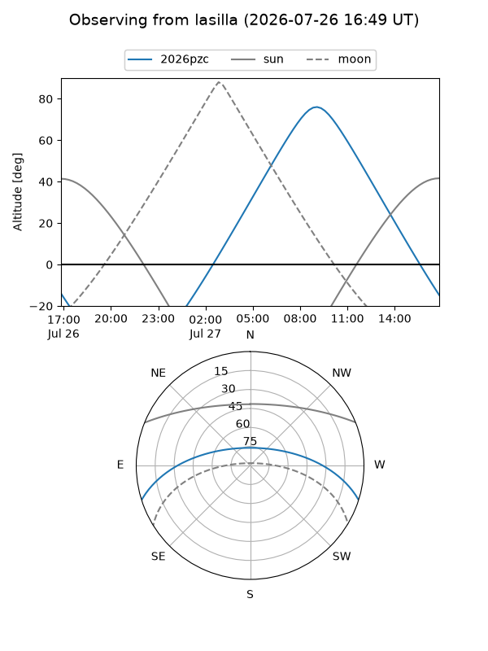
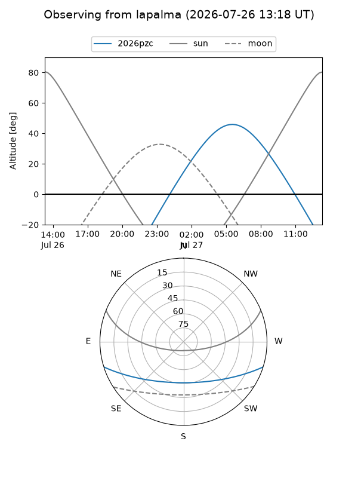
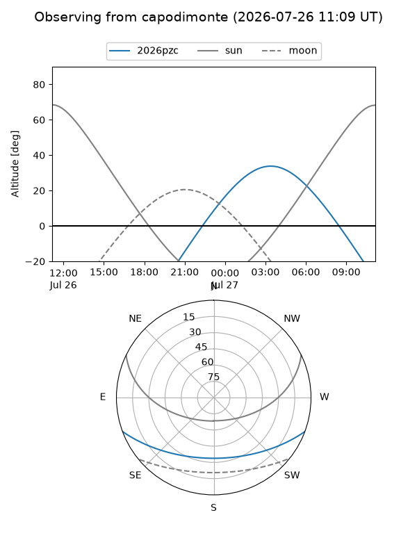
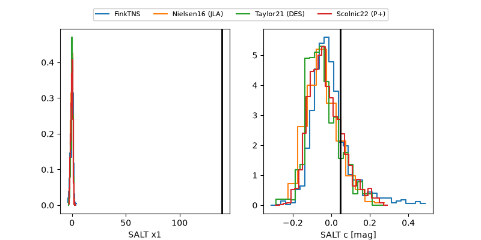

2026pzc
Target 2026pzc at 2026-07-26 13:21
Aliases and brokers:
FINK-ZTF: ztf.fink-portal.org/ZTF26abizyqk
Lasair-ZTF: lasair-ztf.lsst.ac.uk/objects/ZTF26abizyqk
ALeRCE-ZTF: alerce.online/object/ZTF26abizyqk
YSE-PZ: ziggy.ucolick.org/yse/transient_detail/2026pzc
TNS name: wis-tns.org/object/2026pzc
Direct TNS query: direct search
alt names
ZTF26abizyqk (ztf,fink_ztf)
2026pzc (tns,yse)
PS26fgp (panstarrs)
Coordinates:
equatorial (ra, dec) = 9.5942,-15.47350
equatorial (HMS+DMS) = 00:38:22.60,-15:28:24.59
galactic (l, b) = (107.6782,-77.95668)
Flags:
TNS type: nan
peak dt: +5.3
Photometry:
last ztfr=19.99
3 ztfr detections
Lightcurve

Visibility



Additional plots
